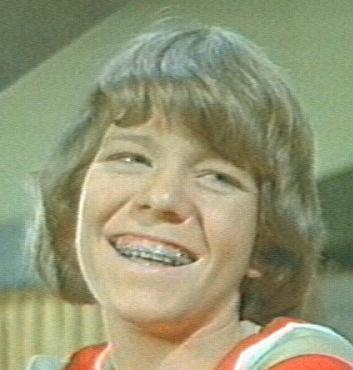
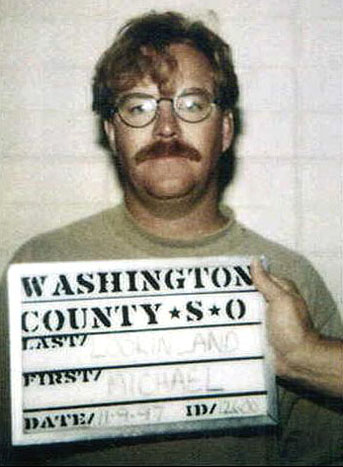

|
Michael Lookinland Mike Lookinland, age nine, would have his dishwater-blonde hair dyed chestnut brown once a week and spend the next six years of his life growing up on television as Robert 'Bobby' Brady in The Brady Bunch. At the recommendation of his parents, Lookinland selected this part over an opportunity to play opposite Bill Bixby in The Courtship of Eddie's Father. Either was a thankless role -- but Lookinland's Bobby Brady career would last him the rest of his life. The stock-and-staple "youngest son" in any sweeping narrative is rarely given the attention it deserves, but Bobby Brady was an exception. Mike Lookinland delivered a nuanced performance with a haunting intellect, often radiating subtle melancholy or low self-esteem. His character was sensitive about many things, like his height, or his strength. He always seemed locked in competition with his siblings in a desperate attempt to earn the favor of those around him. He tried to do more pull-ups than his brother. He saved Greg from being locked in a meat freezer. He pushed Peter out of the way before he was knocked unconscious by a falling flowerpot. Bobby Brady wanted to be the best pool player, the best hall monitor. He dreamt of race cars and lied to his schoolmates about being friends with Joe Namath. Yet Bobby could also display remarkable affection toward his sister Cindy, the only Brady younger than himself. In one eerily incestuous episode, he acts as Cindy's secret admirer when she feels "left out" of her older sisters' gossipy teenage love lives. Who can imagine the pain of knowing so well one's own character?  Here was a family dynamic where six children shared two bedrooms connected by a single bathroom. And their dad was an architect, for Christ's sake. But despite these glaring clerical errors, The Brady Bunch is now considered the most popular suburban American family sitcom from a bygone era -- and Mike Lookinland helped make it all happen. When the program went off the air in 1974, Lookinland Attended Chadwick School in Palos Verdes Peninsula, California. It was a co-educational college preparatory which surrounded him with snotty teenagers who'd watched all his insecurities play out on television. Once the intrigue of his celebrity status wore off, it was a difficult experience to say the least, and he dropped out. Lookinland the adult would be an alcoholic for years, taking smaller roles in TV miniseries like Gambler V: Playing for Keeps, and Stephen King's The Stand, but the Brady stigma would entirely overshadow these efforts. Again and again, he'd return to join the cast of The Bradys, The Brady Kids, A Very Brady Christmas, The Brady Girls Get Married, The Brady Bunch Hour, The Brady Bunch Home Movies, and The Brady Kids on Mysterious Island -- an animated Saturday morning cartoon. Whether or not eight-year-olds noticed it was actually the Mike Lookinland performing the voiceover is anyone's guess. He was arrested November 9, 1997 near St. George, Utah, after losing control of his Ford Bronco while driving drunk. To this day, he works as a cameraman in Salt Lake City, and prefers to avoid interviews. |